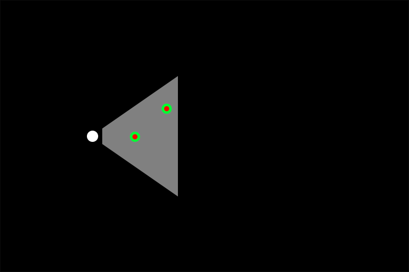

Tisch/Danspace Project Residency 2017
Mimi Yin
Faculty
NYU Tisch School of the Arts - ITP
Tiriree Kananuruk, Documentation and Curation of Sound
Special thanks to Alexx Shilling and Kat Sullivan for helping me develop the workshop and Tiri's documentation team: Mikey Asanin, Vijchika Udomsrianan, Woraya Boonyapanachoti, Wipawe Sirikolkarn, Ratawan Tanadumrongsak.
Residency activity is supported through an ongoing partnership between Tisch Initiative for Creative Research and Danspace Project's Community ACCESS program.
Code created for this residency can be found here.
The Research Question
Why create dances with interactive media?
As Merce Cunningham & Friends showed us all, even where there is no relationship between things, if they happen at the same time, in the same space, we find relationships nonetheless.
So then what is the point of hooking up dancers to sensing devices to connect them to sound and visual media if the relationships already exist in our minds?
Interactive media often takes 1 of 2 forms:
- Reactive ambience. (I use ambience instead of set design to be able to include sound in addition to lighting, projection, objects.)
- Media controller where media "mickey-mouses" dancers' movements with unmistakable precision.
I am exploring a third model for dance and interactive media, that of interactive media as a form of improvisation where dancers and interactive systems co-exist and converse as equal partners in interactive play.
What is interactive play in performance?
Human choices that shape arc.
If you look at interactive play through the lens of games, it is a form of interaction where human actors make a series of choices in response to each other to dramatically affect the arc of a game.
The choices and the consequences of those choices are defined and enforced by pre-programmed rules of interaction for the game.
If you look at interactive play through the lens of improvisation, it is a form of interaction where human actors make a series of choices in response to each other that dramatically affect the arc of a piece.
While improvisation is generally understood to be a spontaneous act of creation, it too is usually bound by forms and idioms.
How is interactive play different?
Choice or choosing as a form of conversation is what differentiates interactive play from reactive ambience and media controllers.
In reactive ambience, dancers are inputs who can affect their environment but don't fundamentally shape its character. They nudge the system rather than define it.
In media controllers, dancers as "users" of an interactive system "controlling" media the way that you or I control the volume knob or a paint brush. They shape the system absolutely.
In both cases, the communication between human and machine is rather one-sided. The machine dutifully senses and responds to the human. But how the machine responds does not weigh heavily upon the human's next choice.
In interactive play, human actors are players not users, inhabitants of a world they can shape but never control and how that world responds to their choices greatly informs the next choice they make.
However, what differentiates interactive play is not technological, but psychological. The difference lies in the approach of the designer who creates the rules of interaction and the human actors who play by those rules.
As such, the human players need training to make this psychological shift from nudger and user to player. The human players must also become temporary experts in the medium they are interacting with. If it's visual, dancers' visual sensibilities become as important as their choreographic sensibilities. If it's sound, their musical sensibilities become as important as their choreographic sensibilities.
The Provocation
I proposed 2, 2-hour workshops at Danspace Project inside of St. Mark's Church to try to answer the following question:
What does it look like when a moving body is engaged in conversation with sound?
Sound + Movement is a workshops series exploring improvisation and interactive play between movement and sound, as facilitated by emerging technologies. Together, we will attempt to create rules of interaction that can sustain meaningful and surprising improvisation between humans and computers, movement and sound, moving bodies and other moving bodies.
Note that although we will be using technology and discussing in detail the rules of interaction programmed therein, this is NOT A TECHNOLOGY WORKSHOP. Instead, we will be devoting ALL OF OUR TIME TO MOVEMENT + PLAY. We will work with physical props, verbal instructions and interactive sound programs. Participants should wear comfortable clothing and come prepared to move!
Who participated?
The workshop was publicized through the ITP student and alumni mailing lists as well as through faculty members of the Tisch Dance Department.
Those interested in participating were asked to fill out this form. The workshops were filled on a first-come, first-serve basis. ~60 people responded. 28 participated.
Of the ~60 respondents, ~70% were affiliated with NYU as a current student(18) or alumn(19) of ITP, IDM or Tisch Dance or as a faculty member(1).
About half of the participants were trained dancers.
A few of the participants self-identified as musicians or sound artists.
Why sound?
I chose to experiment with sound for 2 reasons:
- Sound doesn't compete visually with dance, a visual art form.
- Sound doesn't compete for the dancer's gaze. As a result dancers can pay attention to sound without diverting their gaze which should remain an unfettered instrument of choreography.
The Preamble
Each workshop session began without words. By way of example, more or less everyone ended up lying on the floor on their backs with a few people needing whispered hints to "do as their neighbors."
Supine, we listened to a talk given by composer and sound artist Pauline Oliveros on the concept of "Deep Listening."
In the first workshop we listened to it straight.
The second workshop, we listened to a remixed version of it that is jumbled and multi-layered. I asked everyone to try as hard as they could to hear and understand every word of it.
We then moved straight into a 20 minute warm-up exercise which began with bringing awareness to where your body is in contact with the floor and culminated in a swarming pattern where individually, each person was asked to walk backwards and weave in between other bodies without bumping into or jostling anyone.
After which I read the following prepared statement:
When we talk about interactivity, we are really talking about a form of improvisation.
Unchoreographed, unscripted, unpredictable interactions. Spontaneous. Reactive. Yet not unregulated.
For example, we can talk about:
Games as a form of interaction.
And games as a form of improvisation.
And games as we all know have rules of engagement.
Interactive experiences, like games have rules of interaction enforced through code.
Yet, why is it people can sit for days playing [insert your favorite video game]. But interactive art installations usually last no longer than 15 seconds, 30 if it's really good.
The rules of engagement are only half of it.
The quality of a game just like the quality of any kind of interaction just like the quality of any kind of improvisation relies just as much on the skill and attentiveness of the players, both their attentiveness to the game and their attentiveness to each other.
These 2 workshops are dedicated to cultivating skill in the player. Something under-cultivated in many if not most non-game interactive experiences.
This doesn't mean that what we do here is irrelevant to those of you interested in building interactive experiences for the unskilled player. The innocent bystander, the random passerby.
Because only when we know what an attentive player looks like, can you start to reverse engineer what you need to do to turn unskilled players into skilled players.
The Set-up
I arranged 4 Microsoft Xbox Kinect v2 cameras around the perimeter of the stage space (see diagram). Each camera was accompanied by a PC laptop which sent data using the Kinectron server from the cameras to master laptop.
On the master laptop, software written with the p5.js creative coding library collated the data and implemented the rules of interaction detailed below.
What can the cameras see?
The cameras have a range of 500-4500cm (~0.5 - 13.5 feet) with a field of view 70 degrees.
I used exclusively the Kinect camera's skeleton tracking capabilities. Each camera can track up to 6 bodies, approximating the location of 25 joints on each body. In most of the set-ups, I am only tracking 1 joint on the body, usually the Head joint because it is least likely to be obfuscated. However, in the velocity set-up, ALL of the joints are being tracked.
| The Basic Set-up | |
|---|---|
| To run demo: Each red dot represents a body. Red dots surrounded by green are inside at least one of the camera's field of view. Notice that there are four areas where 2 adjacent cameras overlap. As a result, the same body will be picked up by 2 cameras. |
The Rules of Interaction
There are 3 sets of rules of interactions.
1st Rule of Interaction: Distance and Time
- When the camera picks up a "new" body, a new sound file will be played.
- The distance of that body from the camera determines the volume of the sound.
- The amount of the time you remain in the space determines how long the sound file plays and loops for after you leave the space.
- How quickly you leave the space determines the volume level of the sound as it continues to play after you've left. If you leave abruptly, the sound dims suddenly. If you leave slowly and steadily, it continues to play at the same volume.
3 Scenarios for Playing with Distance and Time
We experimented with the following ways to organize which sounds were associated with which camera position.
Scenario 1: 1 camera. 1 piece of music.
I activated 1 camera. Each new body picked up by the camera triggered the same piece of music, the Aria from the Goldberg Variations composed by J.S. Bach.
Scenario 1: Bach
| To run demo: Move mouse into camera's field of view to trigger sound. |
Prompts for Scenario 1
- Try 1 movement idea to figure out the rules of interaction.
- Given your understanding of what the rules of interaction are, try 1 movement idea to "play" with the system.
- Listen to the music. Make your decisions based on the phrasing in the music.
Scenario 2: 2 cameras. 2 sets of timbres.
I activated the 2 cameras opposite each other. Each camera was assigned a set of textural sounds. 1 high in pitch. 1 low in pitch. Each new body triggered a different sound sample.
Scenario 2: Timbres
| To run demo: Move mouse into camera's field of view to trigger sound. |
Prompt for Scenario 2
- Play.
Scenario 3: 2 cameras. 2 sets of rhythms.
I activated the 2 cameras opposite each other. Each camera was assigned a set of rhythmic sound samples. 1 short in duration. 1 long in duration. Each new body triggered a different sound sample.
Scenario 3: Rhythms
| To run demo: Move mouse into camera's field of view to trigger sound. |
Prompts for Scenario 3
- Hear the percussive sounds as a rhythmic timeline. Find your groove and do a little dance.
- Enter the space with a partner and do a little dance with your partner.
- Try to hear the sound you triggered. Alternate between affecting the sound and responding to the sound.
- Now that you understand how the to affect the system, let that understanding move to the back of your mind. Instead shift your focus to the relationship between your body and the bodies around you and enjoy and respond to the sounds you create as a group.
Techniques for Playing with Distance and Time
A. Entrances
- Enter from the farthest corner away from the camera to stun with a loud sound.
- Creep in near the camera and tickle the ear with a barely imperceptible sound.
- Crawl or roll or walk perpendicular to the camera so that it doesn't pick you up until you are already in the middle of the space to trigger the sound at a volume of your choosing.
- Cross the space over and over again, entering and exiting to trigger sounds only to shut them off right away, not unlike hitting seek on a radio over and over again, never pausing for more than a split-second on any channel.
Technique A4: Crossings
| To run demo: Hit spacebar to pause and play. |
B. Traversals
- Yes, you can move towards or away from the camera to affect volume. But more interesting is how you make that journey.
- You can lunge forward and shush the sound suddenly.
- You can creep away from the camera and let it fade in imperceptibly.
- You can shift back and forth, away and towards the camera to raise and lower the volume in rapid waves.
- Perhaps not obviously, moving right and left, away and towards the center will also increase/decrease your distance from the camera.
- You can walk at the same pace, but depending on the angle of your trajectory, you can either affect the volume quickly (walk directly towards the camera) or affect the volume slowly (walk an an angle towards the camera).
Technique B1c. Waves
| To run demo: Hit spacebar to pause and play. |
C. Layering
- Enter and stay for a long time to create a looping "bass line / ostinato" and then jump in and out to layer additional sounds above that bass line.
- Use the techniques described in A. Entrances and B. Traversals to create interesting layering effects. For example, B.3. means you can have a duet where 2 people are walking at the same rate but affect volume at very different rates.
Technique C2. Trajectories
|  | To run demo: Hit spacebar to pause and play. |
D. Listening to the Music
Even with the Bach Goldberg Variation Aria, few people played with phrasing in the music. For example, choosing to exit the camera space at the end of a phrase versus mid-phrase or overlapping 2 versions of the Aria so close together it sounds like an echo effect versus so far apart that it sounds like a round, or choosing to suddenly mute the sound right at the moment of harmonic resolution.
Technique D. Echo
| To run demo: Hit spacebar to pause and play. |
For percussive sounds, build a polyrhythm. Can you enter at the same moment. Can you time it so that the second rhythm plays on the offbeat of the first?
Something Unique about Scenario 2: Timbres.
The sounds in this set were the least "grammatical" in that there was no pitch and no rhythm but simply layers upon layers of textures and timbres. In other words, you could do no wrong, all of it went together. As a result, everyone felt very free to relax and bathe themselves in the sound. It was perhaps the most "fun" set-up of the whole workshop, but also the least challenging compositionally.
2nd Rule of Interaction: Speed
A sound is triggered when any joint on any body exceeds a certain threshold of speed.
Playing with Velocity
4 cameras. 4 sets of sound samples of words.
- Camera 0: Yes
- Camera 1 : Probably, Not
- Camera 2 : No, Never
- Camera 3 : Maybe, So
Set-up: Speed
| To run demo: Hit spacebar to pause and play.Move mouse suddenly to trigger words. |
The most challenging aspect of this set-up is what to do when the system doesn't respond as you expect, how to "never drop the dance" even when the dance is progressing in an unexpected direction. This is especially difficult with velocity because you have just committed to and expended a huge amount of force to no effect. The natural response is to stop and look around. There is a certain element of embarrassment. The challenge is to overcome the urge to stop and take notice of the failure and instead use it purposefully. A fast strike that's greeted with silence can be a compelling upbeat to a second strike that does result in a sound.
It is as interesting to move slowly and evenly so that you don't set off any sounds as it is to strike quickly to set off a sound.
However it is easy for the camera to get confused if you turn your body to face perpendicularly to the camera's gaze. Therefore you can also play with slow and even movement that sets off a barrage of sounds by simply turning.
It is also possible to strike so suddenly that the camera misses the movement completely, providing yet another way to play with strikes that don't produce sound.
Creating Meaning Through Words
This particular setup is unique within the workshop because it introduces words and therefore semantics. As a result, in addition to rhythm, you can also play with meaning. Consider the following 2 "choreographies" of sound.
| Yes
Yes Yes Yes Yes Yes Yes Yes Yes Yes Yes Yes Yes Yes Yes Never |
Maybe
No Never Maybe Never So No Maybe Maybe Never No No No Maybe Never So |
Playing with the in-between spaces
It was also the only set-up where I turned on all 4 cameras, which meant that there were 4 areas where adjacent cameras overlapped. As a result, you could also play with setting off 2 words at the same time:
- Yes + Probably/Not
- Probably/Not + No/Never
- No/Never + Maybe/So
- Maybe/So + Yes/Probably
3rd Rule of Interaction: Stillness
The average speed of all of the bodies controls the volume level of a sound (rain falling, clock ticking). Above a certain threshold, the faster the speed, the faster the volume falls. Below a certain threshold, the slower the speed, the faster the volume rises.
Playing with Stillness
- 4 cameras. 1 sound file.
- Sound Day 1: Rain.
- Sound Day 2: Ticking clock.
Because it is the average speed that counts, 2 people in the space can easily be at cross purposes. 1 person can persist for a long while trying to raise the volume with almost near perfect stillness and even periodic bouts of movement from the 2nd person can disrupt that plan. However, when there is a large group of people moving in the space and as a group they have decided to move slowly, a lone disruptor disrupts to no avail.
Because there are no limits as to how low the volume can fall or how high it can rise. As a result, it is possible the volume falls so low that it takes a long period of almost-still slow movement to get the volume back into audible range. Similarly, it is possible for the volume to rise so high that it takes a long period of fast movement to audibly lower the volume. In other words the system builds inertia.
Learnings
Like the Stages of Romantic Love, interactive systems arouse in their human users, a series of emotional states that together form a narrative that reveals much more about who we are than how the interactive system works.
Over the course of the four workshop hours, I led a group of dancers, musicians, coders and curious bystanders through the following Stages of Interactivity as we attempted to become skilled players of an interactive system that tracked movement to generate sound.
- Curiosity and the need to figure out how it works.
- Followed by a need to be able to control it, however it works.
- Followed by an urge to play with it.
- Trick it.
- Break it.
- Make it do nothing.
- Make it do something it's not supposed to do.
- Make it do something dramatic.
- Make it do something ridiculous.
- Followed by frustration at the inability to gain perfect control over the system in order to fully carry-off said tricks and plots.
- Followed by acceptance of imperfect control which finally opens the way for artful conversation with the interactive system.
Another way to describe the "arc" of participation would be in terms of focus.
- Everyone begins with a steadfast, almost obsessive fixation on the cameras. The body always faces the camera. the eyes trained on the laptop screen which shows what the camera sees. The posture crouched as if to make eye contact with the apparatus which sits low on the floor.
- Gradually focus shifts inward as they grappled cognitively with the internal workings of the system, the logic behind the rules of interaction.
- Eventually, attention is directed outward as they begin to hear and listen to the sounds, to the music being generated by the system.
- Then begins an appreciation for the relationship between their own movements and the movements of others around them and how those relationships translate into sonic relationships.
- Last, but not least, an awareness of the gestalt emerging from individual choices and interactions.

Next Time
Given what I learned about the arc of discovery when people encounter interactive systems for the first time, I would structure the workshop different next time. On Day 1 of the workshop, I gave the participants a relatively long leash with which to confuse themselves. As a result, the exploration to understand the basic rules of interaction phase lasted a LONG time.
Day 2, I ran a much tighter ship, giving participants specific choreographic tasks to illustrate specific ideas.
As a result, the participants in Day 1 "did" more, played more, explored more while participants in Day 2 "took away" more.
Ideally, you would experience both so next time, I would require attendance at both sessions or run it as a day-long workshop with a break in the middle.
Next Steps
I am currently working on creating a software framework that will allow for a richer, more nuanced set of rules of interaction, one that works with tonality and rhythm so that players can work with musical ideas at a deeper level.